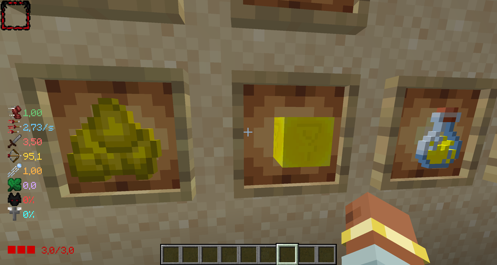
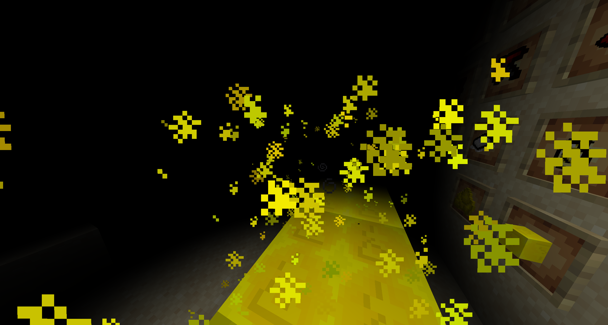

He desenvolupat un mod de minecraft que fusiona els elements d'un altre videjoc,
The Binding Of Isaac, amb el videojoc de minecraft.
Aquest mod afegeix els següents elements:
Nous enemics
Nous objectes
Noves mecàniques de joc
Noves estructuras
I molt mes


Els pasos que es van seguir en aquest projecte van ser els següents:
Planificacio de les mecaniques a introduir
Introduccio d'objectes
Decoratius
Menjars
Armas
Etc
Implementacio de mecaniques
Creacio dels enemics i programacio de la seva ia
Finalment es van crear el disenys de tot l'introduit
Aplicació de gestió de tasques
He desenvolupat una aplicació de gestió de tasques que permet als usuaris crear, editar i eliminar tasques,
així com marcar-les com a completes o incompletes.
Aquesta aplicació està desenvolupada amb les següents tecnologies: